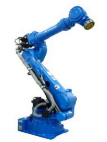

品牌 | YASKAWA |  | |
型号 | MOTOMAN-MS210 | ||
构造 | 垂直多关节型（6个自由度） | ||
最大负载 | 6kg | ||
重复定位精度 | ±0.08mm | ||
水平可达距离 | 2702mm | ||
控制柜 | MOTOMAN-DX200 | ||
动作范围 | S 轴（旋 转） | -180゜ ~ +180゜ | |
L 轴（下 臂） | -60゜ ~ +76゜ | ||
U 轴（上 臂） | -147゜ ~ +90゜ | ||
R 轴（手腕旋转） | -360゜ ~ +360゜ | ||
B 轴（手腕摆动） | -125゜ ~ +125゜ | ||
T 轴（手腕回转） | -360゜ ~ +360゜ | ||
最大速度 | S 轴（旋 转） | 120゜/s | |
L 轴（下 臂） | 97゜/s | ||
U 轴（上 臂） | 115゜/s | ||
R 轴（手腕旋转） | 145゜/s | ||
B 轴（手腕摆动） | 145゜/s | ||
T 轴（手腕回转） | 220゜/s | ||
本体重量 | 130 kg | ||
电源规格 | 三相 AC380V（+10%，-15%）50Hz（±2%） | ||
接地 | D种（接地电阻100Q以下专用接地） | ||
额定功率 | 1.5kVA | ||
环境 | 周围温度 | 通电时：0~+45℃，保管时：-10~+60℃ | |
相对温度 | 最大90%（不结露） | ||